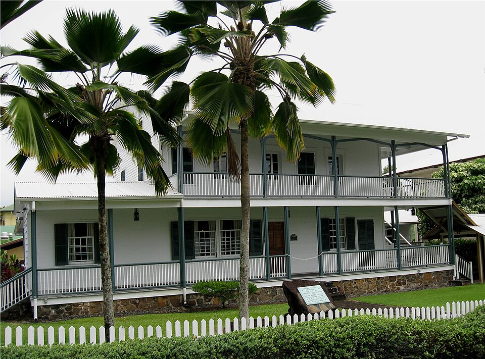

Lyman Museum and Mission House
Place: Lyman Museum and Mission House, Hilo, Hawaiʻi
Type: Natural and cultural history museum / historic missionary residence
Namesake: The Lyman family, beginning with missionaries David Belden Lyman and Sarah Joiner Lyman, who arrived in Hawaiʻi in 1832
Story it tells: How generations of the Lyman family reinvented a nineteenth-century missionary home into a Smithsonian-affiliated museum dedicated to preserving the natural and cultural history of Hawaiʻi and beyond.

The Lyman Museum and Mission House in Hilo traces its origins to David Belden Lyman and Sarah Joiner Lyman, Congregationalist missionaries from Connecticut and Vermont. The couple married in November 1831 and departed shortly thereafter as members of the Fifth Company of missionaries sent to Hawaiʻi by the American Board of Commissioners for Foreign Missions (ABCFM). Arriving in May 1832, the couple was assigned to the Hilo mission station, where David established the Hilo Boys' Boarding School in 1836 and served as its principal for nearly forty years. Sarah also taught and kept detailed journals, documenting daily life in Hilo as well as volcanic eruptions and earthquakes. After spending their first several years in a traditional thatched house, the couple constructed a New England-style home in 1838–1839 using native koa and ʻōhiʻa wood. The home, which hosted notable visitors including Mark Twain and Isabella Bird, is recognized as the oldest surviving wood-framed building on Hawaiʻi Island.
Following the deaths of David and Sarah in 1884 and 1885, respectively, the home passed out of the family's ownership and served as a boardinghouse. In 1930, their granddaughter Emma Lyman Wilcox and her daughters reacquired the property and undertook efforts to restore it. The Lyman House Memorial Museum was established in 1931, making it one of Hawaiʻi's earliest historic house museums. Initially centered around the historic residence, family heirlooms, and Hawaiian artifacts, the museum gradually expanded. Much of that transformation can be attributed to another descendant, Orlando Hammond Lyman, whose interests extended well beyond the history of his own family.
Born in Hilo in 1903, Orlando Hammond Lyman studied agriculture before embarking on a career with the Hawaiian Sugar Planters' Association (HSPA). He worked his way through the ranks of the HSPA Experiment Station, eventually becoming its senior representative on Hawaiʻi Island, coordinating agricultural research across the island's sugar plantations. Lyman was an avid collector of minerals, gems, and shells. Over several decades, he assembled a collection of more than 20,000 mineral and gem specimens through field collecting, purchases, and exchanges with collectors around the world. As the museum's collections grew, Lyman helped spearhead the development of a modern museum building adjacent to the Mission House. Designed by renowned Hawaiʻi architect Vladimir Ossipoff, the new facility opened in the early 1970s, allowing the museum to expand its focus to the natural and cultural history of Hawaiʻi.
Among the thousands of specimens Lyman had acquired was an unidentified mineral from the Wessels Mine in South Africa. Following his death in 1986, mineralogists examining the specimen determined that it was a previously unidentified mineral species. In 1990, the mineral was formally named orlymanite in his honor, with its reference specimen deposited at the Smithsonian Institution. The museum itself became a Smithsonian Affiliate in August 2002, a recognition of the museum's collections and professional standards. What began as an effort by the descendants of two missionaries to preserve their ancestral home had evolved into a nationally recognized museum. Today, the Lyman name can be found not only on a historic home and museum in Hilo but also in the scientific literature documenting the minerals of Earth.